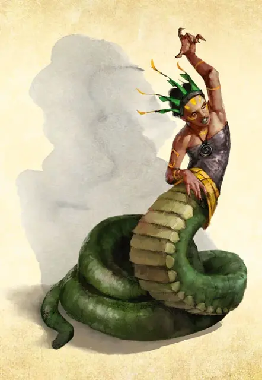

Юань-ти говорящая в кошмарах
Yuan-ti Nightmare Speaker
Средний Монстр (Колдун), обычно нейтрально-злой

Класс Доспеха 14 (природный доспех)
Хиты 71 (13к8 + 13)
Скорость 30 футов
| мод | спас | ||
|---|---|---|---|
| СИЛ | 16 | +3 | +3 |
| ЛОВ | 14 | +2 | +2 |
| ТЕЛ | 13 | +1 | +1 |
| мод | спас | ||
|---|---|---|---|
| ИНТ | 14 | +2 | +2 |
| МДР | 12 | +1 | +3 |
| ХАР | 16 | +3 | +5 |
Навыки Обман +5, Скрытность +4
Иммунитет к урону яд
Иммунитет к состояниям отравление
Чувства тёмное зрение 120 футов, пассивное Восприятие 11
Языки Общий, Бездны, Драконий
Опасность 4 (1100 опыта)
Бонус мастерства +2
Среда обитания Лес, Подземье, Пустыня
Особенности
Дьявольское зрение. Магическая тьма не мешает тёмному зрению юань–ти.
Сопротивление магии. . Юань–ти имеет преимущество на спасброски от заклинаний и других магических эффектов.
Действия
Мультиатака. Юань–ти совершает одну атаку Удушением и одну атаку Скимитаром или две атаки Призрачными клыками.
Удушение. . Рукопашная атака оружием: +5 к попаданию, досягаемость 10 футов, одна цель. Попадание: 10 (2к6 + 3) дробящего урона и цель схвачена (Сл высвобождения 14) если она Большого размера или меньше. До окончания захвата цель опутана и юань–ти не может душить другую цель.
Скимитар (только в форме юань–ти). . Рукопашная атака оружием: +5 к попаданию, досягаемость 5 футов, одна цель. Попадание: 6 (1к6 + 3) рубящего урона.
Призрачные клыки. Дальнобойная атака заклинанием: +5 к попаданию, дистанция 120 футов, одна цель. Попадание: 16 (3к8 + 3) урона некротической энергией.
Призыв кошмара (Перезаряжается после короткого или продолжительного отдыха). Юань–ти заглядывается в кошмары существа, которое может видеть в пределах 60 футах и создаёт иллюзорное, неподвижное воплощение самых сокровенных страхов существа, видимое только для него.
Цель должна совершить спасбросок Интеллекта Сл 13. При провале цель получает 22 (4к10) урона психической энергией и становится испуганной воплощением, считая его реальным. Юань–ти должна концентрироваться для поддержания иллюзии (как при концентрации на заклинании), которая длится до 1 минуты и ей нельзя навредить. Цель может повторять спасбросок в конце каждого своего хода, оканчивая иллюзию в случае успеха или получая 11 (2к10) урона в случае провала.
Использование заклинаний (только в форме юань–ти). Юань–ти накладывает одно из следующих заклинаний, используя Харизму в качестве базовой характеристики и без использования материальных компонентов (Сл спасброска от заклинаний 13):
• Неограниченно: дружба с животными [animal friendship] (только на змей), волшебная рука [mage hand], сообщение [message], фокусы [prestidigitation];
• 3/день: внушение [suggestion];
• 2/день каждое: тьма [darkness], ужас [fear].
Бонусные действия
Перевертыш. Юань–ти может превратиться в Среднюю змею или обратно в свою истинную форму. Ее характеристики одинаковы в обеих формах. Любое снаряжение, которое она носит или несет, не превращается. Если она умирает, то остается в своей текущей форме.
Описание
Говорящие в кошмарах – жрицы юань–ти проклинатели, которые заключили пакт с Дендаром Ночным Змеем, и кормят божество страхами и кошмарами своих жертв в обмен на силу в мире смертных. Жрицы получают кошмарные видения от Дендара, интерпретируют их как пророчества, и используют свою магию и влияние для воплощения виденного в реальность.
Жесточайшие из юань–ти, шепчущие в кошмарах наслаждаются пытками заключенных и рабов, держа их в непрерывном страхе и ужасе. Они предпочитают ужасать а не убивать противников. Они манипулируют сообществами гуманоидов для приобретения большего количества жертв и наслаждаются обществом Нежити.